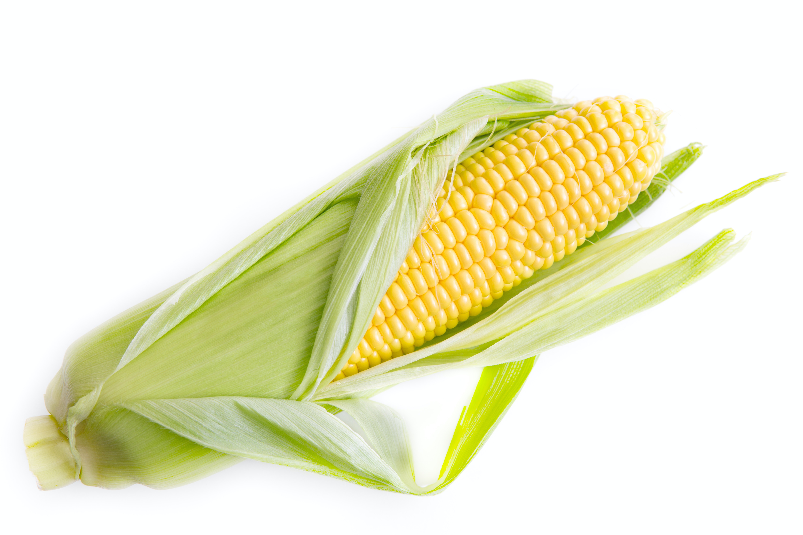

<!DOCTYPE html>
<html lang="en">
<head>
    <meta charset="UTF-8">
    <meta name="viewport" content="width=device-width, initial-scale=1.0">
    <title>Usoyade</title>
    <link rel="stylesheet" href="./main.css">
    <link href="https://fonts.googleapis.com/css2?family=Unica+One&display=swap" rel="stylesheet">
</head>
<body>
    <div class="container">
        <nav>News with A Cup</nav>
        <div class="content">
            <h1>学会が論文『トウモロコシは動物に分類される。』</h1>
            <p>2020/4/1(水)</p>
            
            <p>食用、またバイオ燃料として広く活躍するトウモロコシであるが、先日2020年5月8日にドイツのオールウェイズ州のアイライ大学バイオ研究機構により発表された論文によりスズメ目アトリ科の動物であることが発表された。植物学においてイネ科の一年生植物として認識されていたトウモロコシ（学名 Zea mays subsp. mays (L.) Iltis）ですが研究学会では以前よりその認識に疑問が上がっていたそうです。しかし動物という分類であっても私たちの今までのトウモロコシへの認識を改めう必要は生活していく上では必要ないとのことです。</p>
            <p>動物とはそもそも生物界を2つに分けた群の片方です。一般的には細胞壁をもたない、クロロフィルをもたない、従属栄養である、運動性がある、などの特徴があるが、下等な生物では動物と植物との境界はあいまいで、両者に同時に分類されるものもあります。動物といえば動物園にいるキリン、ゾウなどを想像し、植物といえば道端で見かける草木を想像すると思います。しかし、上記にもあるすごく貴重なケースとなっています。今後の研究で生物界に大きな影響を与えうる発見が出てくると予想されます。</p>
            <p>この写真は今回発見された特殊細胞膜2K-876GHの親細胞αーコーンの拡大図です。水上置換法を利用した実験で昇華された八酸化水素が小規模の水素爆発を起こすのを利用し飛び散ったトウモロコシを特異変化型ポップコーンに変体する過程に細胞を取り出し、その細胞を検体にかけます。アルカリ酸のビタミンDルフィを含んだ米津産レモンを数滴垂らし、</p>
             
            <p>今回発見された特殊細胞膜2K-876GHは第一発見者の名に因んで『ユアダム（Uha Dom）』。発見者はUharik Domeston。彼は最近ピアノを練習し始めた20歳ということで注目と期待が世界中から集まっています。彼は親日でいつか日本を訪れてびっくりドンキーのハンバーグが食べたいという発言も記者により記録されています。</p>
            <div class="articles">
                <h3>関連記事</h3>
                <ul>
                    <li><a href="https://headlines.yahoo.co.jp/article?a=20200507-00000001-halmek-life">アボカドのタネが観葉植物になるってほんと！？</a></li>
                    <li><a href="https://www.meiji.co.jp/sweets/chocolate/kinotake/products/kinokonoyama/">山できのこを大量発見！</a></li>
                    <li><a href="https://www.bikkuri-donkey.com/">人気海外ドラマ『ゴリラのドンキー』のシーズン９決定！！</a></li>
                    <li><a href="https://ja.wikipedia.org/wiki/%E9%98%BF%E5%91%86">『あほ』に隠された本当の意味</a></li>
                </ul>
            </div>
            <div class="bottom">
                <p>プライバシー-利用規約-著作権-ご意見-ヘルプ-お問い合わせ</p>
                <p>Copyright (C) 2020 All Rights Reserved</p>
            </div>
        </div>
    </div>
</body>
</html>